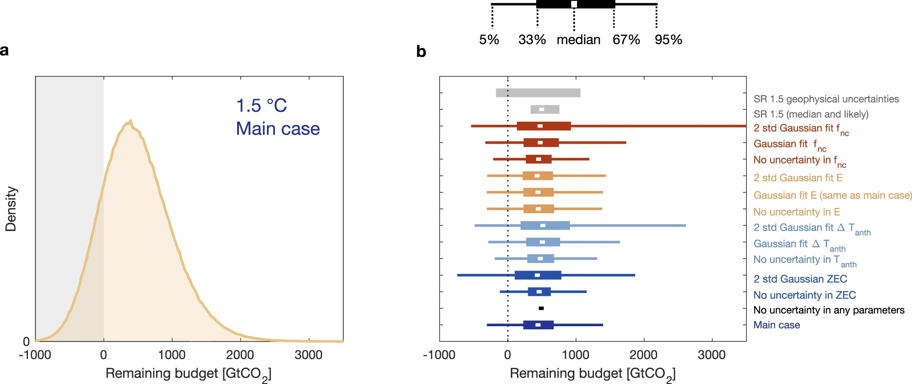

7 Carbon Budget
The temperature response for a 1.5°C scenario has a huge uncertainty & this propagates to the uncertainty in the carbon budget. To say “the remaining carbon budget for 1.5°C is 440 GtCO₂” [add favorite number] is highly misleading Taking a narrow 67–33% range, the value is 230–670 GtCO₂, but full range (left) could be −1000 - 2000 GtCO₂… (yes, could be negative or huge) (Glen Peters)
Memo Matthews:
The remaining carbon budget quantifies the future CO 2 emissions to limit global warming below a desired level. Carbon budgets are subject to uncertainty in the Transient Climate Response to Cumulative CO 2 Emissions (TCRE), as well as to non-CO 2 climate influences. We estimate a median TCRE of 0.44 °C and 5–95% range of 0.32–0.62 °C per 1000 GtCO 2 emitted. Considering only geophysical uncertainties, our median estimate of the 1.5 °C remaining carbon budget is 440 GtCO 2 from 2020 onwards, with a range of 230–670 GtCO 2 , (for a 67–33% chance of not exceeding the target). Additional socioeconomic uncertainty related to human decisions regarding future non-CO 2 emissions scenarios can further shift the median 1.5 °C remaining carbon budget by ±170 GtCO 2 .

Remaining carbon budgets (RCBs) represent the future cumulative CO 2 emissions that would be consistent with keeping global warming to a specified level. Despite being conceptually simple, RCBs have been defined and estimated in various ways and with many different underlying assumptions, resulting in a wide range of “best estimates” across different studies 2 . Moreover, most of these estimates of remaining budgets account for only a subset of the relevant uncertain processes and often omit the contribution of key uncertain processes (such as permafrost thaw or future scenario uncertainty, among others)
Median TCRE estimate is 0.44 °C per 1000 GtCO2 , with a 5–95% range of 0.32–0.62 °C per 1000 GtCO2
A stronger constraint on the left-hand side of the distribution (low TCRE values, with sharply increasing probability above 0.25 °C/ 1000 GtCO 2 ), while the right-hand side of this distribution has a wider tail. This right-skewed distribution shape of our observationally-constrained TCRE estimate is physically related to the possibility of a large negative aerosol forcing
Median RCB for 1.5 °C is 440 GtCO2 from 2020 onwards, representing a 50% chance of stabilising warming at or below 1.5 °C. The corresponding budget for a 67% chance of remaining below the target is 230 GtCO2 from the year 2020 onwards.
Matthews(2021) Carbon Budget Uncertainties (pdf)
7.1 Net-zero
Disaster looms if big finance is allowed to game the carbon offsetting markets to achieve ‘net zero’ emissions.
Net zero increasingly involves highly questionable carbon accounting. As a result, the new politics swirling around net zero targets is rapidly becoming a confusing and dangerous mix of pragmatism, self-delusion and weapons-grade greenwash.
The science of net zero is simple: every sector of every country in the world needs to be, on average, zero emissions. We know how to do this for electricity, cars, buildings and even a lot of heavy industry. But in certain areas, including air travel and some agricultural emissions, there is no prospect of getting to zero emissions in the near future. For these residual emissions, greenhouse gasses will need to be sucked out of the atmosphere at the same rate as they are added, so that, on average, there are net zero emissions.
The science of net zero is simple: every sector of every country in the world needs to be, on average, zero emissions. We know how to do this for electricity, cars, buildings and even a lot of heavy industry. But in certain areas, including air travel and some agricultural emissions, there is no prospect of getting to zero emissions in the near future. For these residual emissions, greenhouse gasses will need to be sucked out of the atmosphere at the same rate as they are added, so that, on average, there are net zero emissions.
Making this work requires carbon removal, also known as “negative emissions.” This can be low-tech, like restoring forests, as this takes carbon out of the atmosphere and stores it in trees. Or it can be hi-tech, like using chemicals to strip carbon dioxide from the atmosphere and then pumping it deep underground into safe geological storage. In theory this is all fine, as pragmatically some carbon removal is needed to balance hard-to-reduce emissions: but negative emissions and offsetting alone are not a route to net zero.
In practice, by believing in the promise of these methods, we are too often deceiving ourselves, in three major ways. The first is an unrealistic overreliance on carbon removal to preserve the status quo. Critically, there is far too little land to plant enough trees to counter today’s emissions, and large-scale hi-tech methods do not yet exist. The second deception is in offsetting against notional emissions trajectories instead of removing carbon from the atmosphere.Offsetting needs to be used to remove carbon dioxide from the atmosphere to counter difficult-to-remove emissions, and not just be an enabler of business-as-nearly-usual. The third deception comes from not getting what you think you’re paying for in the self-regulated global carbon market. The commercial carbon offset concept relies on “additionality” – that money paid then reduces emissions or captures carbon that would not otherwise have happened. The offsets market is awash with old legacy carbon credits where that assumption is violated.
If such deceptions remain, disaster looms. Big finance, led by Carney, is planning to massively expand carbon markets. Conceivably, new carbon-based financial products could boom, with little impact on emissions. Just like the sub-prime crisis, few will understand what they bought, and another globe-spanning crash could sweep the world, compounding economic and climate crises causing mass suffering, as we realise again that the Earth owes us nothing. Nature doesn’t do bailouts.